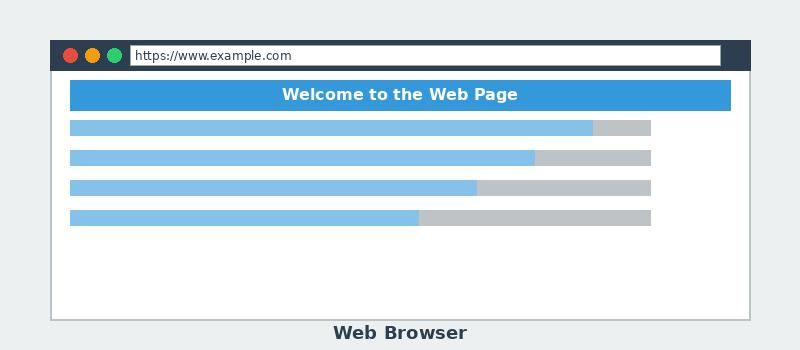

What is a Web Browser?

A web browser is software that retrieves and displays web pages. When you type a URL or click a link, the browser sends a request to a web server and renders the returned HTML, CSS, and JavaScript.
Popular browsers include Google Chrome, Mozilla Firefox, Safari, Microsoft Edge, and Brave.
Key facts:
- Browsers interpret HTML code to display text, images, and videos
- They use HTTP/HTTPS to request pages from web servers
- Modern browsers include developer tools for debugging
- The first web browser was called WorldWideWeb (later Nexus)
Related terms: Web Server, HTTP, HTML, URL